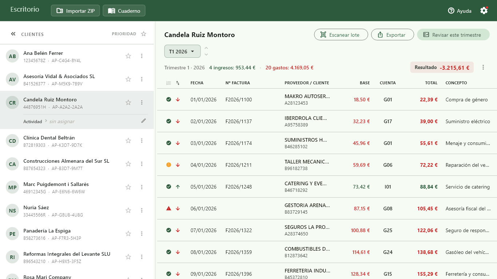
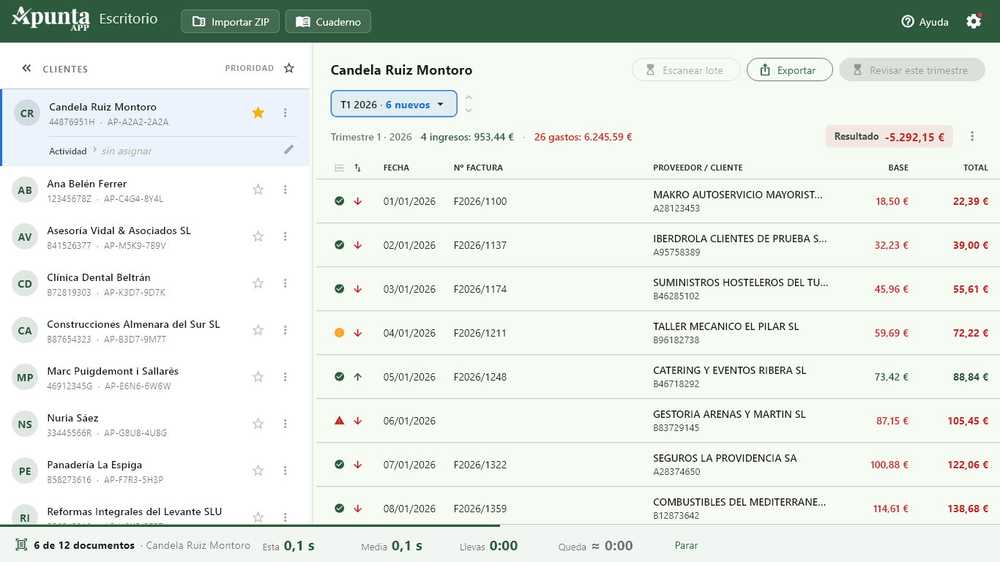
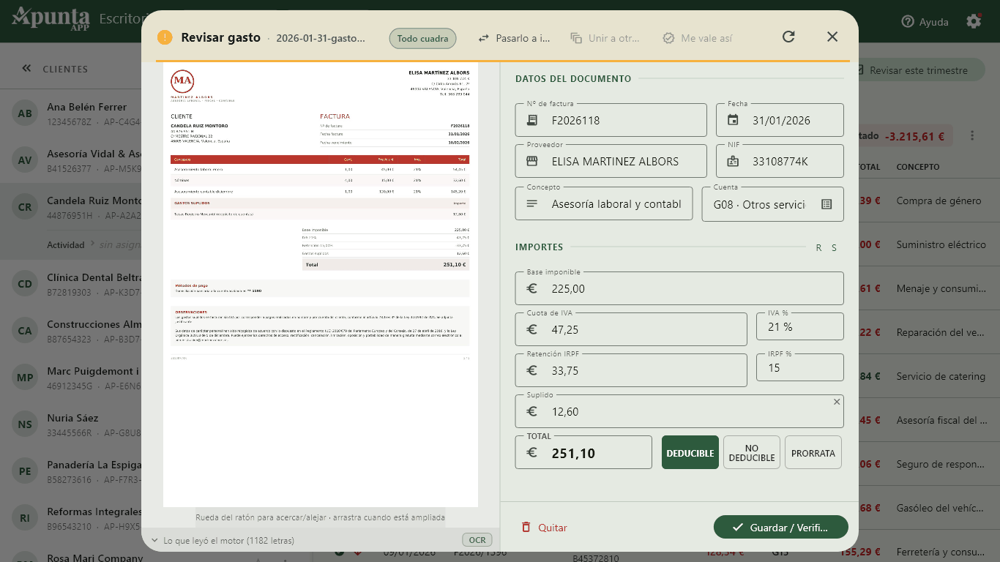
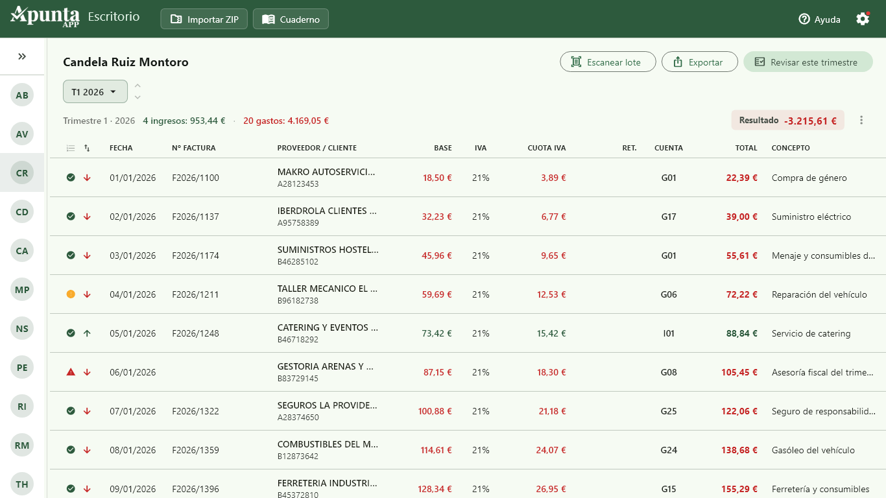
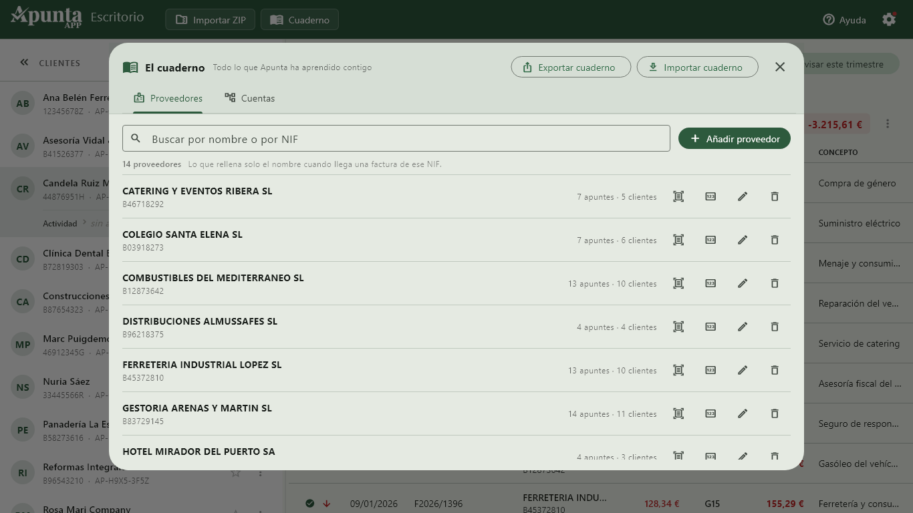
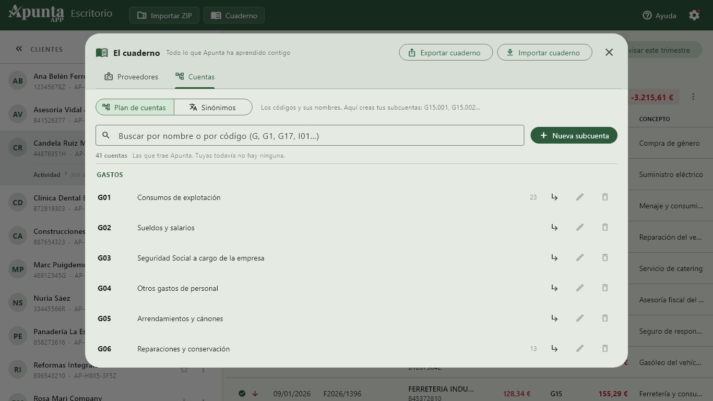
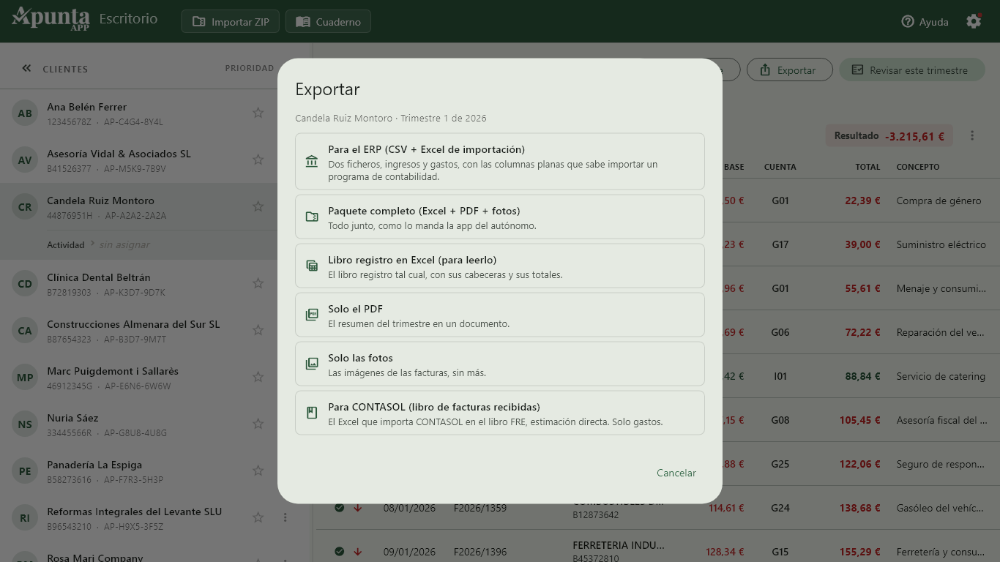
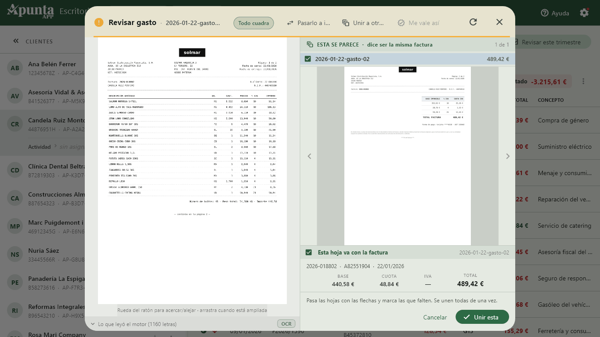

El puente entre las facturas de tus clientes y tu programa de gestión.
Tú no tecleas facturas: las revisas. Apunta las lee, aprende de cada corrección tuya y te las deja listas para importar.

Un PDF del escáner con el trimestre entero. Apunta lo parte hoja a hoja.
Una carpeta de imágenes, y las procesa todas seguidas.
O el fichero que te manda tu cliente desde Apunta APP para el móvil, con sus facturas ya ordenadas por trimestre.
Cada dato lleva su color. Verde es un dato comprobado. Ámbar es un dato que hay que mirar. Rojo es un dato que falta.
Y hay una regla que no se salta: para poner un dato en verde, Apunta tiene que haberlo leído del papel y que le cuadre la aritmética. Si solo consigue leer una cifra, no se fía ni de sí misma y te lo marca.
Preferimos dejarte un hueco antes que rellenarlo con algo inventado.
Corriges el nombre de un proveedor una vez y no vuelves a tocarlo. Ni en ese cliente ni en ningún otro: el cuaderno lo aprende por NIF y lo aplica en toda tu cartera.
Y lo que tú validas es intocable. La máquina no te lleva la contraria por mucho que vuelva a leer la factura.
Cuando un proveedor se cambia de nombre, decides tú si vale a partir de ahora o si estaba mal desde el principio. Las facturas antiguas conservan el nombre que llevaban, que es lo correcto.
Cuanto más lo usas, menos trabajo te da.
La factura, al lado del apunte, con zoom y sin abrir carpetas.
Las facturas de varias hojas se ven enteras, y si el escáner ha partido una en dos, las juntas en un solo apunte junto con su justificante de pago.
Excel, PDF, el paquete completo con las imágenes, o solo las fotos para atender un requerimiento.
Y exportación directa a tu programa de gestión: hoy CONTASOL, con el libro de facturas recibidas y el de emitidas, e iremos añadiendo más. Si trabajas con otro y quieres que Apunta exporte al tuyo, escríbenos y cuéntanoslo: nos ayuda a decidir cuál va antes.
La factura delante y el apunte al lado. Así se trabaja.
Tus clientes a la izquierda y sus apuntes del trimestre a la derecha, con el resultado siempre a la vista.

El escaneo va por detrás, con su progreso abajo. Los apuntes van apareciendo mientras tú sigues trabajando.

La factura a la izquierda con su zoom, el apunte a la derecha. Y debajo, lo que leyó el motor.

Verde, ámbar y rojo, apunte por apunte. De un vistazo sabes cuáles hay que mirar.

El cuaderno: los proveedores que Apunta ha aprendido contigo, y en cuántos clientes de tu cartera aparecen.

El plan de cuentas de estimación directa, con sus sinónimos. Y tus subcuentas, si las necesitas.

Exportar: para tu ERP, el paquete completo, el libro registro, solo el PDF, solo las fotos o directo a CONTASOL.

¿El escáner ha partido una factura en dos? Marcas las hojas que van juntas y se unen todas de una vez.
Ni nube, ni servidores, ni terceros. La base de datos va cifrada y la clave la protege Windows: si alguien copia el fichero y se lo lleva a otro ordenador, no puede abrirlo.
Respondes tú ante la AEPD de los datos de tus clientes, y eso lo tuvimos en cuenta desde el primer día.
Y tienes copia de seguridad completa, con las imágenes de las facturas dentro, cifrada con tu contraseña, para cambiar de ordenador en un paso.
250 € + IVA al año. Unos 21 € al mes, gasto deducible del despacho.
Un mes de prueba antes de pagar nada.
Lo cobra Microsoft con tu cuenta: no tienes que darnos ningún dato bancario.
Es por gestor, no por despacho.
Y si algún día dejas de renovar, tu trabajo sigue siendo tuyo: puedes entrar, verlo todo y exportarlo. Lo que no puedes es meter trabajo nuevo.
Apunta no hace la labor de gestoría ni presenta nada ante Hacienda. No emite facturas.
No sustituye a tu programa de contabilidad: prepara los datos para él.
Cada cliente que use Apunta en su móvil es menos trabajo manual para ti: en vez de una bolsa de tickets, recibes sus facturas ordenadas por trimestre y en el mismo formato que las de todos los demás.
Les cuesta 49,99 € una vez. No les metes en ninguna suscripción.
Windows 10 versión 1809 o posterior. Funciona en el ordenador que ya tienes.